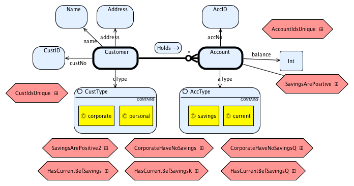
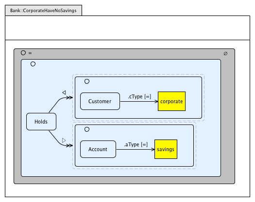
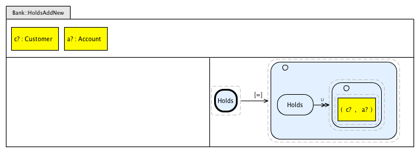
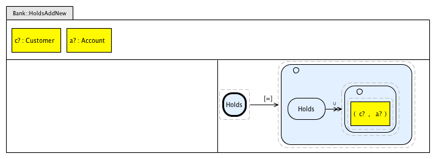
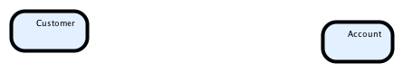

VCB Tutorial based on the Simple Bank case study
This tutorial shows how to build the VCL model of the Simple Bank case study [1, 2, 3, 4, 5] using VCB.
The complete VCL model of this case study can be obtained from here (you can import the model into eclipse: File->Import->Existing Projects Into Workspace->Select Archive File). The sections that follow present the requirements of the case study, give an overview of the VCL model, and provide detailed instructions on how to build parts of the model using VCB.
Requirements of Simple Bank
The following table gives the requirements of the simple bank case study to be modelled in VCL.
| R1 | The bank system shall keep information of customers and their Bank accounts. A customer may hold many accounts; an account is held by one customer only. |
| R2 | A customer record comprises a customer number, a name, an address and a type (either corporate or personal). Each customer has its own unique customer number. |
| R3 | A Bank account shall have an account number, a balance indicating how much money there is in it, and its type (either current or savings). Each account has its own unique account number. |
| R4 | Accounts of type savings cannot have negative balances. |
| R5 | Customers of type corporate cannot hold savings accounts. |
| R6 | Customers may hold saving accounts provided they also hold a current account with the Bank. |
| R7 | The system shall provide an operation to create customer records. This takes as input the customer's name, address and type; the customer number is to be assigned internally by the system. |
| R8 | The system shall provide an operation to open bank accounts for some customer. This takes as input a customer number and a type of account; the account number is to be assigned internally by the system. |
| R9 | The system shall provide an operation to deposit money into a bank account. This takes as input an account number and an amount to be deposited. | R10 | The system shall provide an operation to withdraw money from some bank account. This takes as input an account number and an amount to be withdrawn. |
| R11 | The system shall provide an operation to view the balance of some bank account. This takes as input an account number and outputs the account's balance. | R12 | The system shall provide an operation to obtain a list of all accounts of some customer. This takes as input a customer number and outputs the set of accounts numbers corresponding to accounts held in the bank by the customer. | R13 | The system shall provide an operation to view a list of all accounts that are in debt in the bank. This outputs the set of accounts numbers corresponding to accounts held in the bank that are in debt. | R14 | The system shall provide an operation to delete accounts from the system. This takes as an input the number of the account to be deleted. A bank account may be deleted provided its balance is 0. |
Overview of VCL model
The VCL model of Simple Bank is made of a single ensemble package called Bank. Its package diagram is:
The structural diagram (SD) of the package Bank is as follows:
This SD declares nine invariants represented as VCL assertions (elongated hexagons). They represent different forms of the invariants of the problem being modelled. They are as follows: 'SavingsArePositive', 'SavingsArePositive2', 'CustIdsUnique', 'AccountIdsUnique', 'CorporateHaveNoSavings', 'CorporateHaveNoSavingsQ', 'HasCurrentBefSavings', 'HasCurrentBefSavingsR' and 'HasCurrentBefSavingsQ'.
The invariants are described in the following assertion diagrams:


A behaviour diagram identifies the operations of some package. The Behaviour diagram of 'Bank' is as follows:
There two types of operations: update operations (they change state) and observe operations (or queries). Update operations are represented as contracts (double-lined elongated hexagons) and queries as assertions (single-lined elongated hexagons). An operation can be local or global. Local operations are connected to a set. Global operations stand unconnected.
The VCL diagrams describing the local operations of set 'Customer' are:
The VCL diagrams describing operations of set 'Account' are:
The VCL diagrams describing global operations of the package 'Bank' are:
 


The Z that is generated by VCB for these VCL diagrams is given here .
The following sections give step by step instructions on how to build the VCL diagrams shown above, and how to generate Z specifications from them.
Launching VCB and starting a new VCL model
- Install VCB, if you have not already done so. Installation instructions are available here.
-
Launch Eclipse. Start a new VCL model by creating a new Eclipse project. Here's a video showing how to do this:
- To create a new Eclipse project, go to the "File" menu and select the option "New/Project...". Under the tab "General", select "Project" and press the "Next" button.
- In the "New Project" dialog, give the name "SimpleBank" to the project. Press the button "Finish" to create the project.
Creating the Package
We need to create the package 'Bank' for the SimpleBank model. Here's a video showing how to do this:
The step-by-step instructions for creating the package 'Bank' are as follows:- From the the "File" menu, select the option "New->Other..."; under the tab "Visual Contract Language", select "New VCL Package" option and press "Next".
- Enter "Bank" for the package name and press "Finish".
- This will result in the creation of three diagrams: a package diagram ('Bank.vclpd'), a structural diagram ('Bank.vclsd') and a behaviour diagram ('Bank.vclbd'). Open the package diagram by double-clicking its file in the Eclipse's package Explorer.
- The package diagram identifies the current package 'Bank' (current package is bold-lined). By default, a "container" package (symbol ⌼) is created, but 'Bank' should be an ensemble package. Select the current package. In the "properties" view, change the "Kind" property from "Container" to "Ensemble". The symbol to the left of the package changes to ✶.
Building the Structural Diagram
A structural diagram (SD) introduces the main entities or concepts of a package, defining a package's state space. We need to define in the SD of 'Bank' the main concepts of the Simple Bank system as described by its requirements and how those concepts are related. The aim is to define the state (or information) that the package needs to hold. In the object-oriented paradigm, this involves defining classes and relations between them.
The next video shows how to create the main concepts of a package by defining VCL class sets.
And here are some step-by-step instructions on how to this:
- Open the SD by double-clicking on its file from Eclipse's Package Explorer (file 'Bank.vclsd').
- Accustom yourself to the diagram editor. In the center you'll find the editor panel (the drawing area). To the right, you'll find the palette with all SD primitives. Drawing SDs involves selecting items from the palette and placing them on the editor panel.
- We start by creating the class set 'Customer' to represent set of Bank customers. From the "palette" ("Entities" section), click on the "PrimarySetDef" item. In the drawing area, click again on the location where you would like to place this set. Once you've clicked, a set should appear on the drawing area. Name it 'Customer'. From the "properties" view, change the "Kind" property to "Class" (the line of the countour becomes bold). You may move the set to another location in the drawing area by dragging it.
- Create another class set and name it 'Account'. This represents the set of accounts in the Bank. 
We have identified the main concepts of our problem. We now need to define the state (or information) that these concepts hold. The next video shows how to create basic state properties and sets of values.
The creation of state properties (or VCL property edges) and basic value sets involves the following steps:
- Customers have certain state properties (or attributes). We start by creating sets to represent values of properties; a value set in VCL terms. To do this, we click on the "PrimarySetDef" item on the palette, and click again on the drawing area to place the set; name it 'CustID' (the "Kind" is "Value" by default). Create another value set named 'Name' and another named 'Address'. These sets represent, respectively, sets of customer numbers, customer names and customer addresses.
- We now create the actual state properties by creating VCL property edges. Place the mouse pointer over the set 'Customer'; two connection handles with arrows (see the figure below) will appear in one of the sides. Press the outgoing arrow connector, and drag the mouse pointer to the set 'Name', and then select the option "Create Property Edge". Name the property edge 'name'.
- Create other two property edge for 'Customer' and connect them to sets 'CustID' and 'Address'; name them 'custNo' and 'address', respectivelly.
The value sets that have been defined so far introduce sets of unspecified values. Often, we need to define sets with specific values. A recurring construction in VCL models is that of an enumerated set. The following video shows how to create the required enumerated sets for Simple Bank together with the state properties of account.
The step-by-step instructions are as follows:
- Create a value set named 'CustType". We need to create the objects (or values) to place inside this set. Click inside 'CustType' and hover the mouse over the 'CustType' contour, at a point a collection of selectable items will pop-up; select the "SetDefObject" item from the pop-up.
- Give the name 'personal' to the constant object. Create another constant object inside "CustType" and name it 'corporate'. Finally, create the property edge from 'Customer' to 'CustType' and name it 'cType'. We need to say that 'CustType' is defined in terms of the things it encloses (symbol ◯). Open the properties views by doing a right-click on 'CustType'. In the properties view, set the property "Is Def Set" to "true". The symbol ◯ shows up to the left of the 'CustType' set.
- We now need to create the value set for the properties of 'Account'. Create the value set 'AccID'. Introduce in the diagram a contour that represents the priomitive set of integers by selecting set "Int" from the palette. Create the property edges 'accNo' and 'balance' from 'Account' to 'AccID' and 'Int', respectivelly.
- Create a value set named 'AccType' to represent the two kinds of accounts. Place inside this set the objects named 'current' and 'savings'. Create the property edge from 'Account' to 'AccType' named 'aType'. In the properties view of 'AccType', set the property "Is Def Set" to 'true'.

We now need to say how the two main concepts of 'Bank, 'Customer and 'Account' are related. This involves defining relation edges. Here's a video showing how this is done:
Step-by-step instructions are as follows:
- The relation between customers and their bank accounts is described in VCL with a relation edge (an association). Place the mouse over the set 'Customer', when the connection handles show up, click on the outgoing arrow and drag it over to the set 'Account'; select the option "Create RelationEdge". This will create a line between the two sets; give it the name 'Holds'.
- In the properties view of the relation edge, select the value "*" for the property "Target Mult". This says that one customer may have many accounts.
- We start by introducing in the SD an invariant that says that customer numbers are unique (requirement R2). From the palette ("Entities" section), select the Assertion item; click in the desired location of the drawing area; name it 'CustIdsUnique'. A red marker shows up; this says that the AD describing the invariant has not been defined.
- We now represent in the SD the invariant that says that account identifiers are unique (requirement R3) and the one that says that savings accounts cannot have negative balances (requirement R4). Create two assertions and name them 'AccountIdsUnique' and 'SavingsArePositive'. The invariant 'SavingsArePositive' needs to be defined as local. Place the mouse over the set 'Account', and drag the outgoing connector to the assertion to say that the assertion is local to 'Account'.
- We now create assertions for the other invariants, corresponding to requirements R5 and R6. These are global invariants. Create the assertions named 'CorporateHaveNoSavings' (requirement R5) and 'HasCurrentBefSavings' (requirement R6). We also create invariants 'SavingsArePositive2' (to express globally using sets the requirement R4, local assertion 'SavingsArePositive'), 'CorporateHaveNoSavingsQ' (to express R5 using quantifiers), 'HasCurrentBefSavingsR' (to express R6 using assertion references) and 'HasCurrentBefSavingsQ' (to express R6 using quantifiers).
- This concludes the SD. Save the diagram. We will create assertion diagrams for the invariants.
- Double click on the assertion 'SavingsArePositive' in the VCL SD. A dialogue will show up to ask whether you want to create an AD; say "Yes". This opens a new panel with the diagram editor for ADs.
- Invariant 'SavingsArePositive' requires that savings accounts have positive balances. This can be expressed as a logical implication formula: if account is of type savings, its balance must be positive. Select FormulaNAry from the palette and click on the predicate compartment of the AD or select from the pop-up that shows up after hovering the mouse over the predicate compartment. This will create a formula with an implication (the default n-ary operator); a red marker will show up indicating that your formula is invalid: you need to provide formulas for the left- and right-hand sides of the implication.
- We now build an arrows formula for the left-hand side (LHS) of the implication. Hover the mouse over the formula and select the "ArrowsFormula". This creates a dashed square. Hover the mouse over this square and select "FormulaSourceElem". This creates another dashed square. By hovering the mouse over this dashed rectangle, a pop-up will appear giving you all the options of things you can place inside; select "VCL Object" and name it 'aType' to refer to the property of 'Account' with the same name. A red marker over the rectangle signals an error: the arrows formulas has no property edges.
- We now create one property edge for the arrows formula. Select "PropEdgePred" from the palette ("Predicates"), and click next to the object 'aType'; alternativelly hover the mouse to the right of at arrows formula dashed rectangle and select "PropEdgePred" from the pop-up. Accept the property edge and the equality operator that is shown by pressing enter.
- We now need to associate an object expression with the property edge. Select "ObjectExpression" from the palette and click to the right of the property edge; or hover the mouse to the right of the property edge and select "ObjectExpression" from the pop-up. This will create a rectangle and an arrow from 'aType' to the newly created rectangle. In the expression box, write 'savings' to refer to the item with the same name from the set 'AccType' defined in the SD. This concludes the LHS formula of the implication. The red marker says that you still have an invalid formula; the right-hand side (RHS) of the implication is still missing.
- We now create the RHS formula of the implication. Follow the same process as above: create an "ArrowsFormula" to be placed on the RHS, followed by a "FormulaSourceElem" and a "VCLObject"; name the rectangle "balance". At this point you may need to enlarge the AD; select the whole AD by clicking on the AD's name compartment and then enlarge it by dragging on one of the sides until you have an AD that is big enough to fit the whole formula. Create a property edge, and an object expression. Write "0" on the expression box. Select the property edge; in the properties view, change the operator from "=" to "≥". The red marker is cleared, which means that the formula is now valid.
- This concludes the AD for the invariant 'SavingsArePositive'. Save the diagram, and go back to the structural diagram.
- Double click on the assertion 'CustIdsUnique' in the VCL SD. A dialogue will show up asking whether you want to create an AD. Say "Yes". A new window with the diagram editor for ADs will open.
- Create a "QFormula" in the predicate compartment (by selecting from the palette or from the predicate pop-up). Several error markers show up saying that you have an invalid formula. Introduce one quantifier in the formula by selecting "QDecl", a dashed box with the universal quantifier symbol (∀) inside shows up. The error markers say that you have an invalid formula and that there are no variable declarations for the quantified formula.
- Introduce a variable declaration by hovering the mouse over the quantifier declaration box and select "DeclObj" from the pop-up. In the yellow rectangle, create two variables named 'c1' and 'c2' (separated by commas) with the type 'Customer'. An error marker will show up at this point saying that a predicate formula for the quantifier is missing.
- We can now define the predicate of the quantified formula as an implication: if two objects are different then their customer numbers must also be different. We define a "FormulaNAry" with two arrow formulas to define a predicate similar to the one built above ('SavingsArePositive').
- In Eclipse's package explorer select the file "CustIdsUnique.vclad" and do a copy and paste. A window will show up with a new name for the file you're copying; give it the name "AccoutIdsUnique.vclad".
- Double-click on the assertion 'AccountIdsUnique'. An AD will show up that is exactly the same as 'CustIdsUnique'; you need to change the name in this 'AccountIdsUnique' AD so that it applies to accounts instead of customers.
- In the quantifier declaration change variable names 'c1' and 'c2' for 'a1' and 'a2; change the type name from 'Customer' to 'Account'. In the predicate change 'c1' and 'c2' for 'a1' and 'a2 in the two arrow formulas change the name of the desigantor of the predicate property from 'custNo' to 'accNo'.
- Double click on the assertion SavingsArePositive2 in the VCL SD. A dialogue will show up to ask whether you want to create an AD. Say Yes. A new window with the diagram editor for ADs will open.
- We start by creating a set formula. Select the "SetFormulaDef" item from the palette ("Predicates" group), and click on the predicate compartment of the AD; or hover the mouse in the predicate area and select "SetFormulaDef". A set with the symbol ◯ will appear on the predicate area; the red marker indicates that the formula is invalid.
- Hover the mouse over the set formula and select the "SefDef" (set symbol). This creates a set definition inside the set formula. Hover again the mouse over the inner set and from the available options select "ConstrainedSet"; name the newly created set 'Account' to refer to the set with the same name defined in the SD. We now need to define a subset of 'Account' using predicate property edges. The red marker says that you have not defined a predicate for the set formula.
- We define one predicate property edge, emanating from 'Account'; name it 'aType' to refer to the account's property with same name ("Designator" field of the properties window). Create an object expression and attach it as a target of the predicate property edge; write 'savings' inside the box of the object expression. We have just defined the set of savings accounts. We still have one red marker indicating that the blob formula is not a valid formula; we'll address that problem later.
- Create another predicate property edge emanating from 'Account'. Set the "Designator" property to 'balance' to refer to property of set 'Account' with same name (as defined in SD), and create an object expression for it. Write '0' inside the box of the object expression. You need to change the operator of this property edge from '=' to '<'. This defines the set of savings accounts with negative balances.
- We finally address the error reported by the red marker by making the set formula definition an actual predicate. From the properties view of the outer blob (the one with the symbol ◯ followed by =), set the "shaded" property to "true" (shading says that the set is empty). This shades the outer blob; the red marker disappears. This finalises our predicate; we've said that the set of savings accounts with negative balances must be empty.
- Double click on the assertion 'CorporateHaveNoSavings' in the VCL SD. A dialogue will show up to ask whether you want to create an AD. Say Yes. A new window with the diagram editor for ADs will open.
- We start by creating a set formula definition. Select the "SetFormulaDef" item from the palette, and click on the predicate compartment (or hover the mouse over the predicate area and select the "SetFormulaDef" option). A set with the symbol ◯ followed by = will appear on the predicate area. Create a set definition inside the set formula by hovering the mouse and selecting "SetDef". Hover the mouse over the "SetDef" and select "ConstrainedSet" from the available options; give it the name 'Holds' to refer to the relation edge defined in the SD. One red marker appears to signal the fact that the set formula does not define a predicate.
- We now create a domain restriction for the relation edge 'Holds' to restrict the tuples of the relation to 'corporate' customers only. We do this using a property edge modifier. Create a property edge modifier ("PropEdgeMod"> item in the palette or pop-up) and attach it to the inner set 'Holds'; change the "operarator" in the properties view by selecting "◁". We need to associate a set expression with the edge modifier. Select "SetExpressionDef" from the palette or pop-up and attach it to the target of the property edge modifier; this draws a dashed square. Hover the mouse over the dashed square and select "SetDef"; this draws another set definition.
- Create a constrained blob inside the blob definition and name it 'Customer' to refer to the SD set with the same name.
- The restriction is vacuous. We need to restrict the relation 'Holds' to corporate customers. To do that, we define a predicate property edge and attach it to the inner set 'Customer' and we we attach an object expression to the end of the property edge. We enter 'corporate' in the object expression box and add 'cType' as the designator of the predicate property edge. This inner set defines the set of corporate customers. The restriction restricts the domain of the relation 'Holds' to corporate customers.
- We now restrict the range of 'Holds' to the set of savings accounts. To do that we create a property edge modifier with the symbol "◁" attached to the inner set 'Holds' and attach a "SetExpressionDef" to it. Inside the newly created set definition, we create a "SetDef" followed by a "ConstrainedSet". The inner set should be named 'Account'. Create a property edge predicate for the inner set, and attach it to an object expression; enter 'savings' inside the expression box, and enter 'aType' as the designator of the property edge.
- VCB signals two errors: one saying that the relational operator ◁ is not correct and another saying that the set formula does not define a predicate. The first error is because ◁ restricts the domain of 'Holds', which is defined over the set of customers, but the target set defines a set of accounts. To fix this, we need to change the "operator" of the property edge modifier in the properties view from ◁ (domain restriction) to ▷ (range restriction). As the range of 'Holds' is defined over the set of accounts the error goes away. We remove the red marker that remains by shading the outer set to define a predicate. This says that the set of tuples of 'Holds', restricted on the domain to corporate customers and on the range to savings accounts, must be empty. This effectively says what we want.
- This concludes the AD. Save the diagram, and go back to the structural diagram.
- Double click on the assertion HasCurrentBefSavings in the VCL SD. A dialogue will show up to ask whether you want to create an AD. Say Yes. A new window with the diagram editor for ADs will open.
- Introduce two assertion references in the declarations compartment. To do this, hover the mouse over the declaration compartment and select DeclAssertionRef. Name the assertions: CustsWithCurrent and CustsWithSavings. These are the diagrams that will define the set customers with current accounts and the set of customers with savings accounts. Two red markers appear to say that the assertions diagrams corresponding to the references are not defined.
- Double click on the assertion CustsWithCurrent. A dialogue will show up to ask whether you want to create an AD. Say Yes. A new window with the diagram editor for ADs will open. We start by declaring a set. Hover the mouse over the declarations compartment and select DeclBlob. Name it custsCurr and enter Customer for the type.
- Place a BlobFormulaDef inside the predicate compartment and introduce a BlobDef inside. Create a ConstrainedBlob inside the BlobDef and name it Holds to refer to the relation edge defined in the SD. Attach a property edge modifier to the Holds set, create a BlobExpressionDef for the target of the edge, and create a BlobDef inside the BlobExpressionDef. The red marker indicates that the the formula is invalid.
- Inside the inner BlobDef, create a ConstrainedBlob named Account. Attach a predicate property edge to this blob, and enter aType as the designator. Attach an object expression to the target of the edge and enter current inside the object expression box. We now have two red markers, which say that there is something wrong with the property edge modifier and that the blob formula def does not define a predicate.
- We remove the first red marker by changing the operator of the property edge (in the properties view) from ◁ (the domain restriction symbol) to ▷ (the range restriction symbol). We are interested in restricting the range of the relation Holds. We now enter CustsCurr as the name of the outer blob (in field Bid). But we still get a type error: type of CustsCurr (Pow Customer) does not match that of the blob definition. Actually, this is because we are not interested in taking the whole set, but the domain of the restricted relation. So we select the blob definition that defines the restriction of Holds and select the operator ← to retrieve the domain of the restricted relation.
- Go back to the AD of HasCurrentBefSavings. The red marker over the assertion reference CustsWithCurrent should not be visible any longer. Double-click on CustsWithSavings and start building this AD, which is very similar to CustsWithCurrent; the only difference is that we select all savings accounts instead all current accounts. The resulting AD is as follows:
- We now need to say that the set custSavs (defined in AD CustsWithSavings) is a subset of custCurr (defined in AD CustsWithCurrent). We do this by selecting the BlobFormulaSubset item in the palette and then placing it in the predicate area; name it custCurr. The red marker indicates that an inside blob is missing. In the palette, select the item BlobExpressionId and place it inside the blob custCurr on the predicate area; name it custSavs. The red marker disappears; the formula is now valid.
- This completes the AD. Don't forget to save!
- Double click on the behaviour diagram in Eclipse's package explorer (file 'Bank.vclbd'). An empty behaviour diagram should open.
- We start by creating some local operations. Select BDSet from the Palette (Entities) and click again on the canvas to introduce the set; name it Customer.
- The red marker says that no operations have been defined for Customer. The next step is to define an operation. Enlarge the set Customer so that you can place operations inside. Create on the contract icon of the palette (UpdateOp) and then click again inside Customer; name the contract New. At this point, there is a red marker on the contract saying that a local operation must have a local kind. Select the contract; on the properties view select New for the property kind, which indicates this is a constructor (or new operation).
- Follow the same process, to create the local update operations of set Account, namely: New (of kind New), Deposit (of kind Update), Withdraw (of kind Update) and Delete (of kind Delete).
- Add the observe operation GetBalance of set Account. Click on the assertion icon of the palette (item ObserveOp) and then click again inside the set Account; name it GetBalance.
- We now create the global operations. The update operations are: CreateCustomer, OpenAccount, AccDeposit, AccWithdraw and AccDelete. The observe operations are: AccGetBalance, GetAccsInDebt and GetCustAccs.
- On the BD, double-click on the operation New of set Customer. You'll be asked whether you want to create a new contract diagram for this operation; say Yes.
- We create a variable to hold the newly created object. In the declarations section of the palette, select the New Object item, and then click on the declarations compartment to place a variable declaration for the new object. Name it c!; the type should be Customer.
- Create object variables for the inputs to the operations. Hover the mouse over the declarations compartment and select the object icon (DeclObj). Define variables for the inputs cNo? of type CustID, name? of type Name, addr? of type Address and cType? of type CustType.
- We now define the contract's post-condition by describing the state of the newly created object. This is done by creating action formulas made of a source and a target. Select the item action formula from the Predicates section of the palette and place it on the post-condition compartment. Then Hover the mouse over the created dashed square and select the item FormulaSourceElem. Hover the mouse over the created dashed square and select the object icon (VCLObject); give the name custNo to the object. Then introduce predicate edge for custNo connected to a ObjectExpression; enter cNo? in the object expression box. This formula assigns the custNo property of the newly created object the value of the input cNo?.
- Add more action formulas following the previous step to describe the initial state of the remaining properties of Customer. The property name should be assigned to name?, address to address? and cType to cType?.
- Following the process defined above for the operation New of Customer, we define the operation New of Account. This results in the following diagram:
- The CDs of operations deposit and withdraw of Account declare an object input named amount of type Nat, and have an action formula on the post-condition to set the new value of the property balance.
- The operation Delete of Account is defined through a AD. The AD defines in the predicate an arrows formula to say that an account object may be deleted provided the property balance has the value 0.
- The AD of the observe operation GetBalance of Account introduces an output called a! (to yield the account's balance) of type Int. The predicate says that this output is the same as the account's balance.
- On the BD, double-click on the operation CreateCustomer. You'll be asked whether you want to create a new contract diagram for this operation; say Yes.
- This operation declares three inputs: name? of type Name, address? of type Address, and cType? of type CustType. It also includes references to one contract and one assertion. To create the reference to the contract, hover the mouse over the declarations compartment and select the contract icon (DeclContractRef item); give it the name New; on the Origin field of the properties window enter the name Customer; this refers to contract New of set Customer that creates new customer objects. To create the assertion reference, hover the mouse over the declarations compartment and select the assertion icon (DeclAssertionRef), then name it IsDistinctCustNo; this is to hold a pre-condition that makes sure that the customer number to be assigned to the new customer is unique. This CD has a pre-condition. We say that the input cNo? must belong to the set of customer identifiers (CustID).
- The operation OpenAccount is defined similarly. We start by defining the inputs required from the outside world: aType? and cNo?. In addition, we include two assertion references called GetCustomerGivenCustNo (to retrieve the customer object associated with cNo?) and IsDistinctAccNo (to ensure the uniqueness of the account number of the new account ). We include two contract references to the operation New of Account and to the operation HoldsAddNew. It also includes a pre-condition to say that the input accNo? of Account.New belongs to the set AccID.
- The assertion GetCustomerGivenCustNo has not been defined. Double click on it to define it. The AD declares two variables cNo? of type CustID and c! of type Customer. The output c! holds the customer object corresponding to the customer's number (cNo?). The predicate of AD says that c! belongs to the set of customers that have cNo? as customer number.
- The operation Account.New is defined above, but the operation Holds.AddNew has not been defined yet. We double click on the contract reference to this operation to define it. You'll be asked whether you want to create a new contract diagram, say Yes. Declare two inputs: a? of type Account and c? of type Customer. In the post-condition, declare an action formula that the sets the value of Holds (the relation edge) to a blob expression defined as the union of Holds (in the before-state) and a blob extension made of the pair (a?, c?).
- Now that Holds.AddNew is defined we go back to the CD of OpenAccount. We define a renaming of Holds.AddNew in the renaming field of the properties window, to say that the input a? of Holds.AddNew becomes the output a! from Account.New.
- The CDs of operations AccDeposit and AccWithdraw declare an input aNo? of type AccId (to represent the account's number from which to deposit or withdraw some amount), and they include references to the assertion GetAccountGivenAccNo and the local contracts, which include an operation call on the object a! (property call object). In this case the contract interface is also imported (symbol ) so that the input amount? of local contracts Deposit and Withdraw is also available in the global contract (property import is set to true).
- The imported assertion GetAccountGivenAccNo has not been defined. Double click on it to define it. The AD declares two variables aNo? of type AccId and a! of type Account. The output a! holds the account object corresponding to the account's number. The predicate of AD says that a! belongs to the set of accounts that have aNo? as account number.
- The CD of the operation AccDelete declares an input aNo? of type AccId, and includes references to the assertion GetAccountGivenAccNo, the local contract Delete of Account (through the object a!), and the contract HoldsDelGivenAcc, which includes a renaming (the input a? is renamed to a!).
- The operation HoldsDelGivenAcc has not been defined. We double-click on it to define it. The CD declares an input a? of type Account. The post-condition changes the state of the relation Holds: using a property edge modifier of type range subtraction (symbol ⌦), we delete all tuples (or pairs) that include the object a?.
- In the BD, double-click on the assertion AccGetBalance to create an AD for it. We start by declaring an input object aNo? of type AccId to hold the number of the account we are interested in; select DeclObj from the palette and enter its name and type (field DTy). We create assertion references (palette item DeclAssertionRef) to includes references to the global GetAccountGivenAccNo, and the local GetBalance of Account. The assertion GetBalance is imported through a calling object (through the object a!; field Call Obj), and it is interface-imported (property Import is set to true).
- We start building the AD of the operation GetAccsInDebt by declaring the set of account objects that is going to be outputted. We select DeclBlob from the palette and click on the declarations compartment to create one; we name it accs! and give it the type Account (field DTy). This introduces a set that is going to be outputted. In the predicate, this output is set (through a blob formula definition) to the set of accounts whose balance is less than 0.
- The AD of the operation getCustAccs declares an input object cNo? of type CustID to hold the customer we're interested in and and an output blob accs! of type Account. We introduce an assertion reference to GetCustomerGivenCustNo to retrieve the customer object associated to cNo?; this results in the output c!. The predicate builds the set of accounts for the customer whose number is cNo?, by taking the range of the constrained relation Holds (constrained to include the customer object c!). The range is specified by selecting the operator → (the range operator) in the outer blob (field Bl Op).
- In the VCL SD of SimpleBank, press the Z button. After a while, the Z specification will show up under the SimpleBank folder on the project explorer. You can see the latex of the generated Z, or a pdf of the generated Z specification (generated from the latex). The generated Z specification is typechecked using the CZT typechecker.
- The generated Z specification for this VCL model can be found here .
- Nuno Amálio, Pierre Kelsen. Modular Design by Contract Visually and Formally using VCL. In VL/HCC 2010. IEEE. 2010.
- Nuno Amálio, Pierre Kelsen, Qin Ma. Specifying structural properties and their constraints formally, visually and modularly using VCL. In EMMSAD 2010: 261-273. LNBIP 50. Springer. 2010.
- Nuno Amálio, Pierre Kelsen. The visual contract language: abstract modelling of software systems visually, formally and modularly Technical Report TR-10-03. Univ. of Luxembourg, LASSY. 2010.
- Nuno Amálio, Fiona Polack, Susan Stepney. An Object-Oriented Structuring for Z Based on Views. ZB 2005: 262-278. LNCS 3455. Springer. 2005.
- Nuno Amálio. Generative frameworks for rigorous model-driven development. Ph.D. thesis, Dept. Computer Science, Univ. of York, UK (2007).
We now need to represent the invariants of the SimpleBank model. Here's a video on how to this:
Step-by-step instructions now how to do this are as follows:
Assertion Diagram for local invariant SavingsArePositive
We now create a VCL assertion diagram (AD) to describe the invariant SavingsArePositive of the SD. We will express this as a propositional logic formla expressed visually. Here's a video on how to do this:
The step-by-step instructions on how to do this are as follows:

VCL Assertion Diagram for global invariant CustIdsUnique: quantifiers
We now create a global invariant to say that customer numbers are unique. This can be expressed using a quantified formula of predicate logic: for any two distinct customers, they must have distinct customer numbers.
The following gives step-by-step instructions on how to do this:
VCL Assertion Diagram for global invariant AccountIdsUnique: altering an existing AD
The invariant 'AccountIdsUnique' is very similar in form to 'CustIdsUnique'. We now build the former by altering the latter.
The step-by-step instructions on how to do this are as follows:
VCL Assertion Diagram for global invariant SavingsArePositive2
We now create a VCL AD to describe the invariant 'SavingsArePositive2'. This invariant will say the same thing as the invariant 'SavingsArePositive' defined above (that savings accounts must have positive balances), but it is expressed using sets, rather than a propositional logic formula.
Creating the VCL Assertion Diagram for the global invariant CorporateHaveNoSavings
We now create the VCL AD for the invariant 'CorporateHaveNoSavings', which says that corporate customers cannot have savings accounts.
Above, AD 'SavingsArePositive2' says that savings accounts cannot have negative balances by saying that the set of savings accounts with negative balances is empty. The same approach is followed for 'CorporateHaveNoSavings': we say that the set of corporate customers with savings accounts is empty. This involves referring to the 'Holds' relation edge and applying some relational operators on it using modifier edges.
Creating the VCL Assertion Diagram for the global invariant HasCurrentBefSavings
We now create the VCL AD for the invariant HasCurrentBefSavings, which says that customers must have a current account before opening a savings account. We formulate this by saying that the set of customers with savings accounts must be a subset of the set of customers with current accounts. This involves defining the relevant sets in separate assertion diagrams.
Building the Behaviour Diagram
We now create the VCL behaviour diagram to identify the behavioural units of the package Bank.
Describing the Local Operations
We now create contract and assertion diagrams for the local operations of Customer and Account.
Describing the Global Update Operations
We now create contract and assertion diagrams for the global operations of the package Bank:Describing the Global Observe Operations
The BD of package Bank defines three global operations: AccGetBalance, GetAccsInDebt and GetCustAccs. They are defined as follows.
Generating Z from the VCL diagrams
We now generate a Z specification from the VCL diagrams: